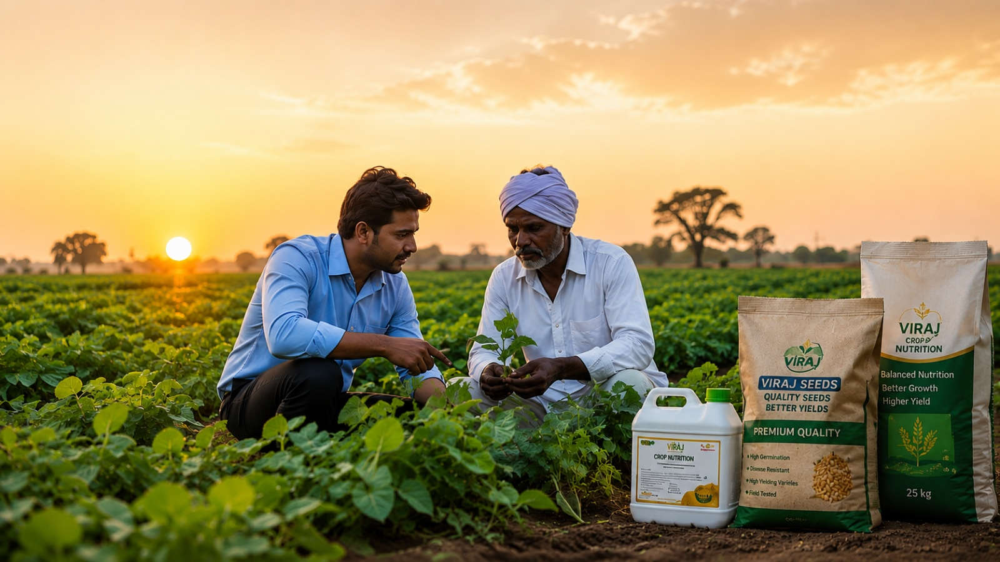
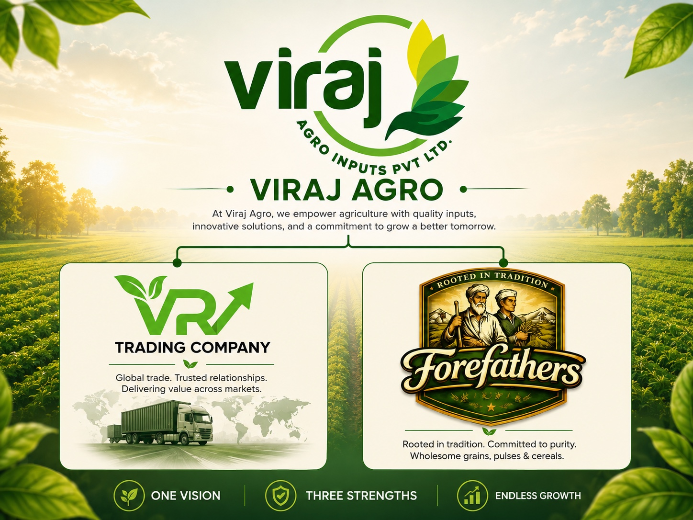
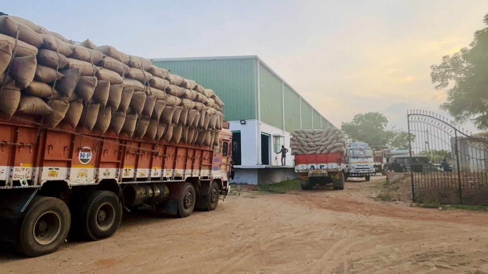
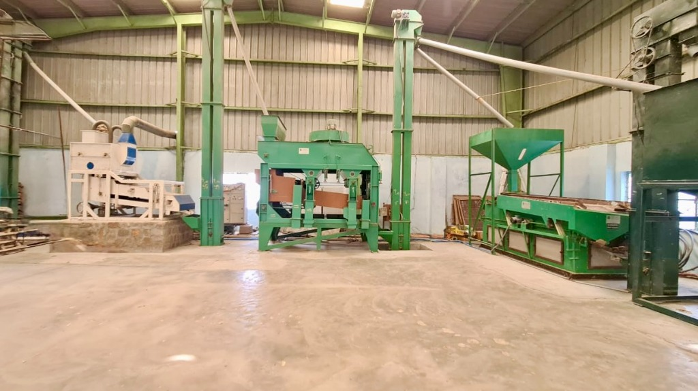
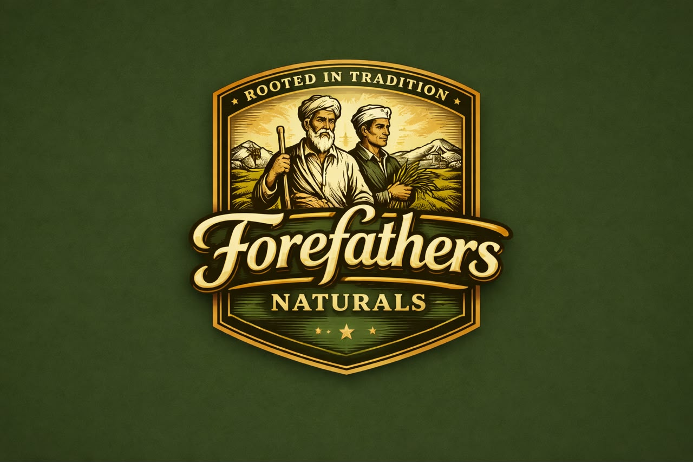

🌾
Agro Inputs
Helping farmers with quality seeds, crop nutrition, crop protection, farm mechanization, and sustainable agricultural solutions.
Learn MoreTrusted across agriculture, trade and industry
Viraj Holdings is a diversified business group creating integrated enterprises across agriculture, commodity trading, agro industries, FMCG, and international trade. We connect industries, strengthen supply chains, and create lasting value through quality, innovation, and responsible growth.

About Viraj Holdings
Viraj Holdings is a diversified business group focused on building integrated enterprises across agriculture, food, commodities, manufacturing, and international trade. Our businesses work together to create a connected ecosystem that supports farmers, industries, business partners, and global markets through quality, innovation, operational excellence, and long-term relationships.
Read MoreOur Businesses

Helping farmers with quality seeds, crop nutrition, crop protection, farm mechanization, and sustainable agricultural solutions.
Learn More
Reliable sourcing, procurement, quality assurance, logistics, and agricultural commodity trading connecting producers with domestic and international markets.
Learn More
Modern processing facilities delivering seed processing, cotton ginning, grading, packaging, and value-added agricultural manufacturing.
Learn More
Developing quality consumer products backed by an integrated agricultural and manufacturing ecosystem.
Learn More
Connecting Indian agricultural products with global markets through efficient international trade and logistics.
Learn More
Our History & Evolution
Over three decades of empowering farmers, strengthening industries, and connecting global markets.
"From a small agricultural trading business in the 1990s to an integrated enterprise spanning Agri Inputs, Commodity Trading, Agro Industries, FMCG, and International Trade."
Read Our Full StoryTo build a globally respected Indian enterprise that transforms industries through innovation, quality, and integrated business ecosystems. Our vision is to seamlessly connect farms, factories, and international markets while setting new benchmarks in sustainability, trust, transparency, and long-term value creation. We aim to empower communities, strengthen supply chains, and drive inclusive growth by leveraging technology, operational excellence, and responsible business practices that create lasting impact for generations to come.
Our mission is to build and grow businesses that deliver quality, reliability, and long-term value across every sector we operate in. We are committed to strengthening supply chains, empowering farmers and business partners, embracing innovation, and conducting every aspect of our business with integrity, transparency, and operational excellence.
By developing an integrated ecosystem spanning agricultural inputs, commodity trading, milling, FMCG, and international trade, we aim to create opportunities that contribute to economic growth while building enduring relationships with customers, suppliers, employees, and communities.
Why Viraj Holdings?
Connected capabilities across inputs, processing, trade and consumer markets.
Working responsibly with communities and agriculture value chains.
Standards-led operations designed for reliability and excellence.
Modern capabilities and disciplined investment in future-ready systems.
Expanding market access with strong international trade partnerships.
Built on trust, continuity and shared value over time.
FAQs
Viraj Holdings is corporate identity of Viraj Agro Inputs Private Limited, a diversified business group operating across agriculture, agro-industries, commodity trading, FMCG, manufacturing, and exports. Through innovation, quality, and sustainable practices, we create integrated solutions that connect agriculture with industry and global markets.
Yes. We supply our products and services across various regions of India through our growing distribution and business network.
Yes. We procure, process, and export high-quality agricultural commodities to international markets while adhering to global quality standards.
Absolutely. We welcome distributors, dealers, retailers, and strategic business partners interested in growing with us.
Simply fill out the enquiry form on our website or contact our team via email or phone. We aim to respond within 24–48 hours.
Partner With Us
Whether you are seeking business partnerships, agricultural solutions, sourcing opportunities, processing capabilities, or international trade collaboration, Viraj Holdings is ready to connect with you.